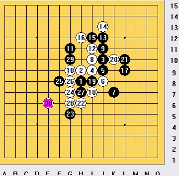
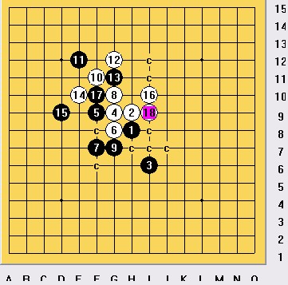
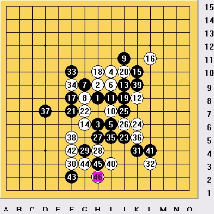
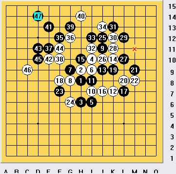
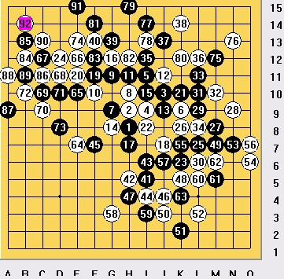

09年第三届全国五子棋团体锦标赛对局简评
#1 09年第三届全国五子棋团体锦标赛对局简评 作者：紋枰論道 发表时间：2010-4-6 22:30:26

第1轮对浙江台州队的丁海峰小朋友，11变招我竟找不到有效走法，挣扎了半天选择这一路相当不积极的走法，对手17疑问手，若直接盖18后面白棋将相当痛苦，行棋至21我发现若再去跟防我将被虐全盘，此时我看到了实战的走法，后面看的也不是很清楚，但我意识到只有把局面尽量倒入复杂才有取胜的机会，就算没杀，我再去右边防一手，黑棋也不是很好走，23预想的走法，25上当直接挂了，事后拆解发现24后白必胜。

第二轮对手弃权，1队4：0京系，第三轮对天津队穆帅，也是个可爱的小朋友，穆帅小朋友上届全团就碰上了不过并未交手，由于对手不强，我选择了赛前一直准备的山月开局，对手7手变招大跌眼镜，我意识到我肯定有VCT存在，行棋至11发现12手无论如何都不能直接VCT，我开始有点后悔自己的不谨慎了， 这时我看了下1台的牛牛差不多胜了，我也没压力了，长考了几分钟发现了12至16的形状，粗算了下必胜了，前面这两盘完全是跟着感觉走的，庆幸自己平时的积累还可以，不然后果真的不敢想



第六轮紧接着碰上了炫飞2，这一队完全是由实战棋手组成的，实力完全在1队之上，这一盘是我这次全团耗时最多的一盘，对手黄励勤开疏星走了个没看过的变化，13后长考，至16定型还算满意，下面黑没什么攻势，17预料中的招数，23定型后，我长考了20多分钟，算了半天发现黑要做V都不可能绕开白棋的那个反4，而且也没发现黑棋更强的做棋手段，而且24若直接防守白棋取胜将变的异常艰难，我看了牛牛那台发现他那台异常艰苦，而且时间所剩也不多了，24！我投出了胜负手，可能对手也没预料到我敢走这一手，锁紧眉头开始长考，时间一点点的过去了，对方的时间由原来的40多分钟一下子缩少到了20多分钟，不过对手真的很强走到了29这个形状，我一下子心慌了，算了下30后若黑再做棋几乎把自己逼上了绝路，因为若不胜上边白棋那个形状是不可能防住的，对手可能也没什么信心能必胜，开始进行交换，35！阴险的一手，36唯一，40后白棋竟然没了先手，不由感叹对手实在太强，不过这一系列的交换花费了他大部分时间，也为我后半盘给他挖陷阱埋下了伏笔，41并未下在最强的做棋点，简单防住后，46开始给对手挖陷阱，这时我唯一想就是一定要尽量挖陷阱逼对手超时，51对手并未上当，52又是个陷阱，对
#2 Re:09年第三届全国五子棋团体锦标赛对局简评 作者：紋枰論道 发表时间：2010-4-6 22:38:52
为板块刷人气的，多谢各位百忙之中来看陈年老贴..
［ 淡红的秋樱 于 2010-4-7 1:59:22 时花20金币送鲜花一朵］
#3 Re:09年第三届全国五子棋团体锦标赛对局简评 作者：罗马王子 发表时间：2010-4-7 0:23:41
 哈哈，我先坐下看了。
哈哈，我先坐下看了。
2010年全团赛快要开赛了，江苏队加油！
［ 淡红的秋樱 于 2010-4-7 1:59:14 时花20金币送鲜花一朵］
#4 Re:09年第三届全国五子棋团体锦标赛对局简评 作者：有志青年 发表时间：2010-4-7 8:33:57
图片来自qq空间，无法显示哦，请给出原帖地址，我将图片转过来#5 Re:09年第三届全国五子棋团体锦标赛对局简评 作者：茗弈小刀 发表时间：2010-4-7 11:51:13
加油！！！！！！！！！！！#6 Re:09年第三届全国五子棋团体锦标赛对局简评 作者：狮子何必吼 发表时间：2010-4-7 19:06:16
 ，看道道的棋评能感受到下棋中的乐趣，思维的乐趣。感谢队友，感谢对手，感谢全团……考虑今年偶也来刷刷，不要下的太烂刷不出就好
，看道道的棋评能感受到下棋中的乐趣，思维的乐趣。感谢队友，感谢对手，感谢全团……考虑今年偶也来刷刷，不要下的太烂刷不出就好
#7 Re:09年第三届全国五子棋团体锦标赛对局简评 作者：南京小飞机 发表时间：2010-4-7 20:32:10
 转眼一年了 今年看你们的了
转眼一年了 今年看你们的了
#8 Re:09年第三届全国五子棋团体锦标赛对局简评 作者：百医天使 发表时间：2010-5-5 19:25:35
今年的又可以拿出来刷人气了，又是最佳一台，呵呵